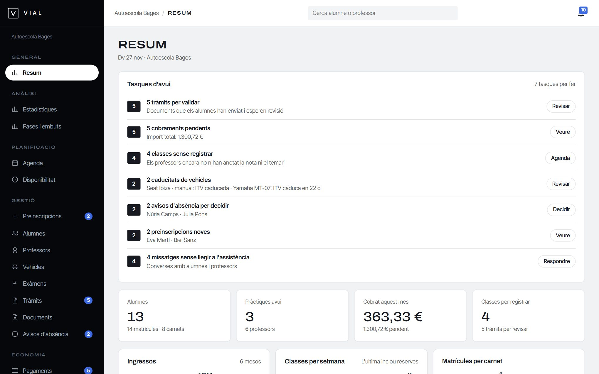
Direcció
El que cal fer avui i com va el centre.
- Tasques pendents ordenades per prioritat
- Estadístiques: aprovats a la primera i pràctiques mitjanes
- Alumnes per fase i per permís
- Packs, cupons i liquidació del professorat
Alumnes, cobraments, exàmens i xifres del centre, al dia.
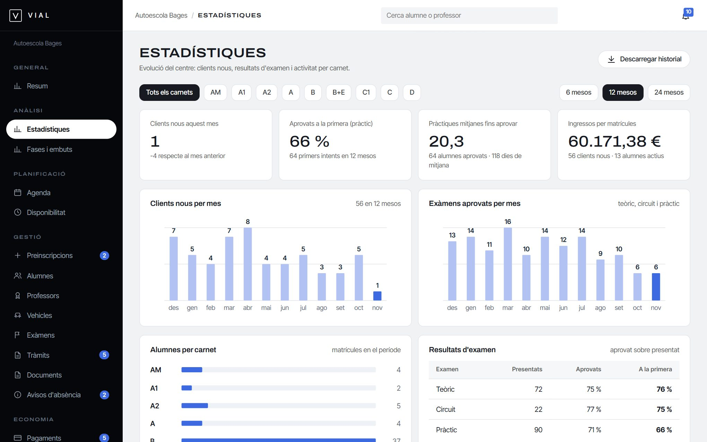
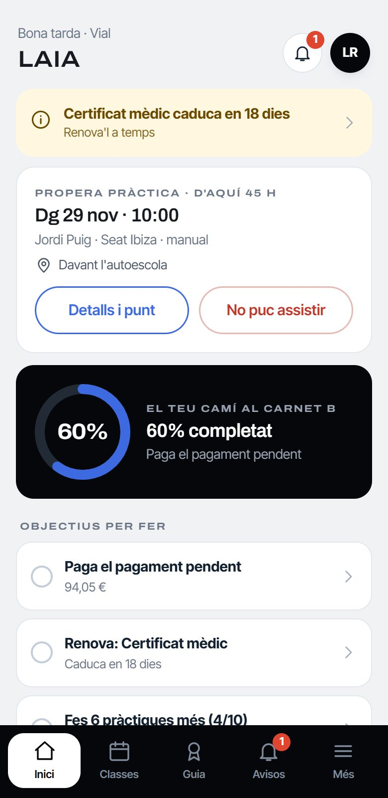
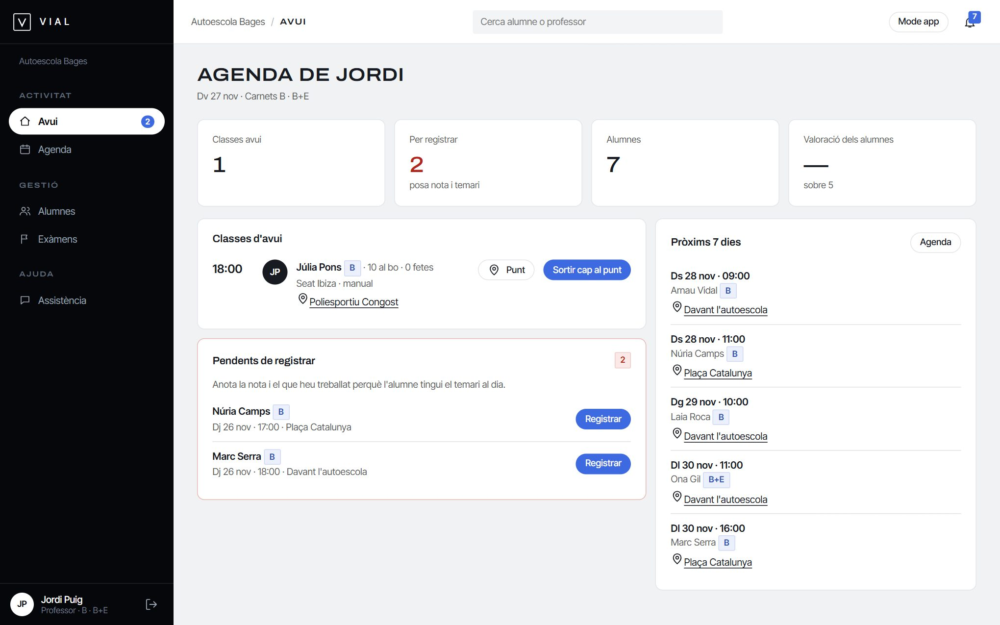
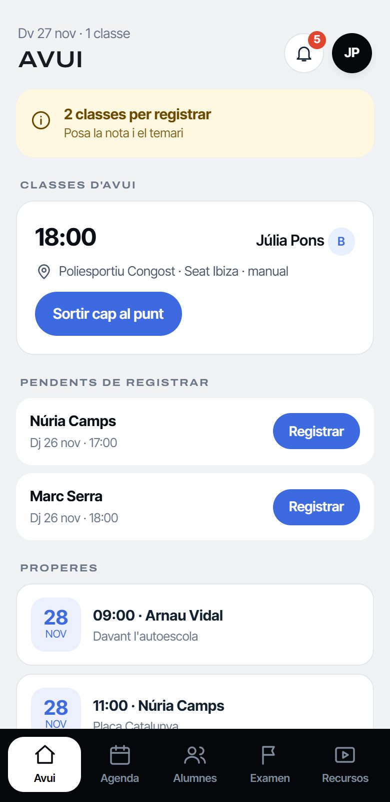
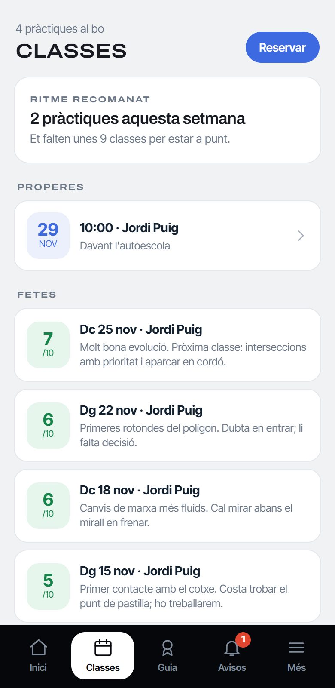
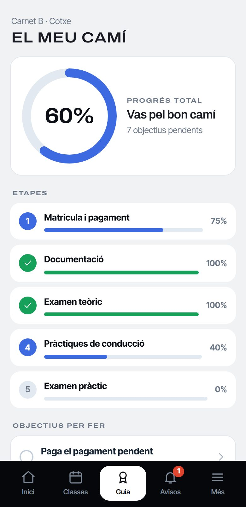
Plataforma
Tothom treballa sobre les mateixes dades. Amb el servidor del centre, cada canvi arriba a l'instant a la resta de dispositius.

El que cal fer avui i com va el centre.
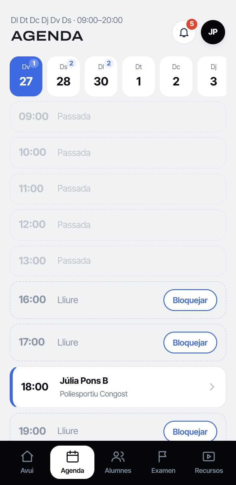
La jornada sencera a la butxaca.
L'aplicació de la vostra autoescola.
Mode examen
El professor fa d'examinador amb el seu mòbil: dona les instruccions, marca les faltes i l'alumne rep l'acta en acabar.
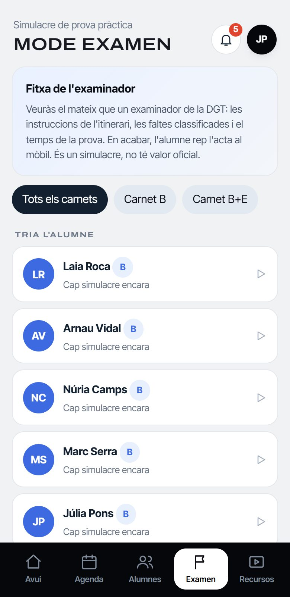
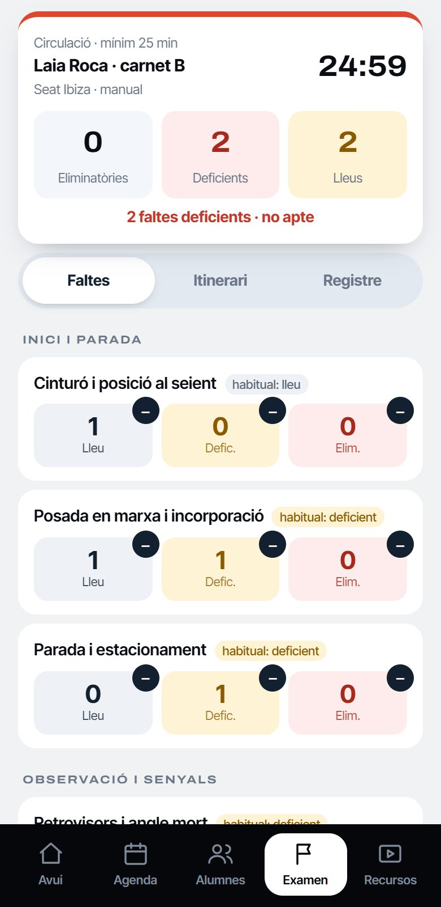
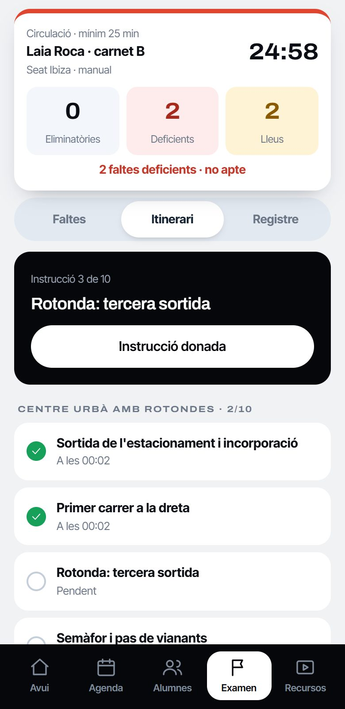
És un simulacre de pràctica, sense valor oficial. Els itineraris i els criteris són orientatius i el centre els pot adaptar.
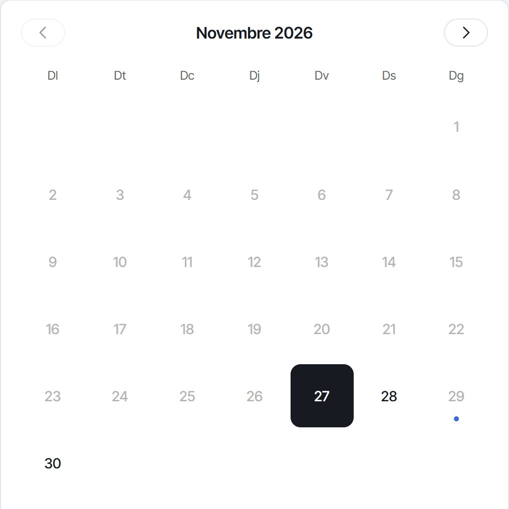
L'alumne tria dia i hora entre els forats lliures de cada professor.
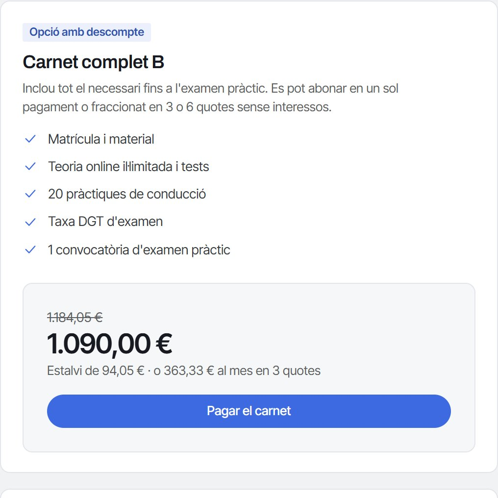
Carnet complet o per packs, amb quotes si el centre les ofereix. Amb Stripe, dins l'aplicació.
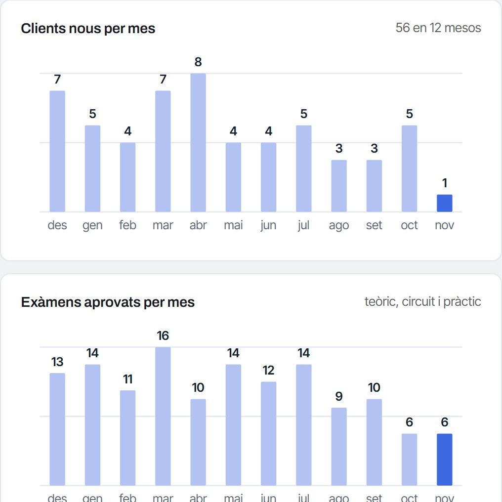
Clients nous, aprovats a la primera i historial mes a mes.
Funcions
Calendari amb les hores lliures. El cost d'una anul·lació depèn de l'antelació i de la política del centre.
Les hores que queden lliures s'ofereixen a preu reduït als alumnes que les poden aprofitar.
Nota i temari de cada classe, nivell per apartat i progrés cap a l'examen.
Targeta i altres mètodes de Stripe, amb pagament fraccionat si el centre l'activa.
Carnet complet, bons de pràctiques, quotes i cupons, amb factures descarregables.
L'alumne puja el DNI o el certificat mèdic i el sistema avisa abans que caduquin.
Inscripció, historial d'intents amb resultat i observacions, i simulacre previ.
Preguntes pròpies per temes i un test que insisteix en el que l'alumne falla.
Passos de cada permís amb el seu estat: pendent, en revisió o validat.
Recordatoris, caducitats i impagats dins l'app. SMS o WhatsApp amb un compte de Twilio.
Alumnes per carnet, pràctiques mitjanes fins a aprovar i descàrrega en CSV.
Quadre d'alumnes per fase i permís per veure on s'acumulen.
Contracte de matrícula amb les dades de l'alumne, amb signatura i descàrrega.
L'alumne tria el carnet, veu el preu i s'inscriu; la sol·licitud arriba a direcció.
Conversa amb alumnes i professors, i control d'ITV i assegurances de la flota.
Presentació
Presentació de 2 minuts. Les dades i els centres que hi apareixen són de mostra.
Marca blanca
Els alumnes entren a l'aplicació de la seva autoescola, amb el seu nom i el seu color. Proveu-ho:
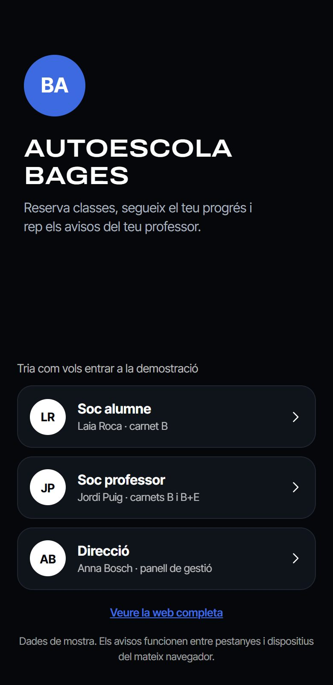
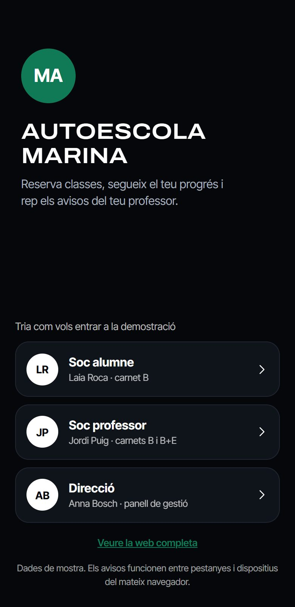
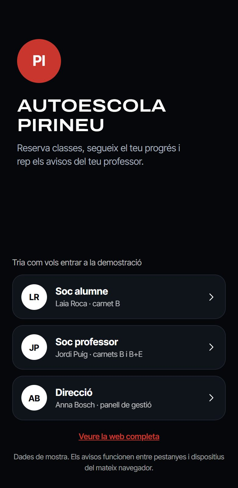
Dades i seguretat
Cada autoescola té la seva pròpia base de dades. No es barregen mai entre centres.
Correu i contrasenya per persona. Les contrasenyes es desen xifrades i les sessions caduquen.
El servidor només envia a cada persona les dades que li pertoquen.
Base de dades SQL amb còpia cada dia i exportació de les dades quan el centre vulgui.
Cada modificació queda anotada amb qui l'ha fet i quan.
Implantació
La imatge del centre, els permisos que s'imparteixen, preus, packs i política de cancel·lació.
Alumnes, professorat i vehicles s'importen a partir de fitxers CSV.
Es creen els comptes del personal i es convida els alumnes.
Els alumnes reserven, el professorat registra i la direcció consulta.
Inscripció en línia · Autoescola Bages
Inscriu-te a qualsevol permís en un minut. L'autoescola et confirma la matrícula i no cal pagar res ara.
Preguntes freqüents
No. Vial funciona des del navegador i, al mòbil, es pot instal·lar com una aplicació des de la mateixa pàgina.
Sí. L'aplicació s'enllaça des del web del centre i es pot servir des d'un subdomini propi. No cal substituir la pàgina existent.
En una base de dades SQL dedicada a cada centre, en un servidor amb connexió xifrada. El centre pot exportar les seves dades quan vulgui.
Sí: reserves, canvis, notes, pagaments i recordatoris arriben dins de l'aplicació, i com a notificació del dispositiu mentre està oberta. També es poden enviar per SMS o WhatsApp amb un compte de Twilio, que té un cost per missatge.
Sí, mitjançant un fitxer CSV. També es poden exportar en el mateix format.
No. Tots els noms, imports i centres de la demostració són ficticis i es poden modificar lliurement.
Proveu-la
Sense registre. Trieu per on voleu començar.
El panell complet: direcció, professorat i alumnat.
Accedir a la demostracióL'aplicació d'una autoescola, tal com la veuen l'alumne i el professor.
Obrir l'appLa pàgina de carnets que el centre enllaça des del seu web.
Veure la pàgina